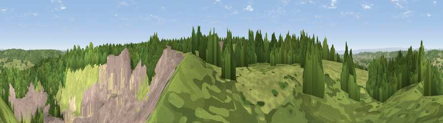

Viewpoint near Flax Bourton
#10248 in England · top 17% of its area beats it · near Flax BourtonThe view, rendered

A 360° render of this exact spot computed from the terrain model, tree cover and land cover — summer colours, afternoon light, calibrated against photographs of famous viewpoints. Real trees, hedges and buildings will differ in detail.
The panorama
Grey silhouette: terrain skyline in each direction (720 bearings, Earth curvature and refraction included). Dashed green: skyline with trees (+15 m) and buildings (+8 m) as obstacles. Blue strip: how far the ground is visible on each bearing.
Where the view opens
Wedge length = distance to the farthest visible ground on that bearing (vegetation-aware). Rings at 10, 25 and 50 km.
What fills the view
36% woodland · 34% grassland · 22% built-up · 5% bare ground · 2% cropland
Angular shares of the visible panorama (visual magnitude), not map area. Landscape diversity 0.57 (0–1 Shannon).
Key numbers
More beautiful places nearby
The staircase of upgrades: each row has a higher view potential than everything closer. Driving times are estimates from straight-line distance, calibrated against real road routing — check an actual route before setting out.
| Place | Direction | Drive | Score |
|---|---|---|---|
| Viewpoint near Backwell | WSW · 2 km | ~5 min | 65.5 |
| Dundry Hill | ESE · 5 km | ~11 min | 72.4 |
| Viewpoint near Norton Malreward | E · 9 km | ~18 min | 72.9 |
| Dial Hill | WNW · 10 km | ~20 min | 74.9 |
| Beacon Batch | S · 11 km | ~20 min | 79.4 |
| Bleadon Hill [Loxton Hill] | SW · 17 km | ~30 min | 79.6 |
| Viewpoint near Stinchcombe | NE · 38 km | ~57 min | 80.5 |
| Viewpoint near Holford | SW · 44 km | ~64 min | 80.8 |
51.40770, -2.71773 · source: screening · position refined by local search. Computed location — check access rights before visiting.